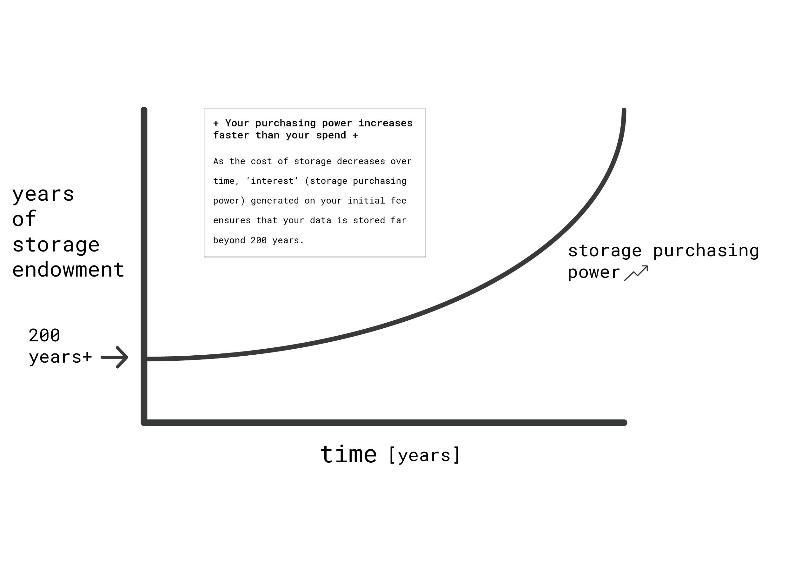
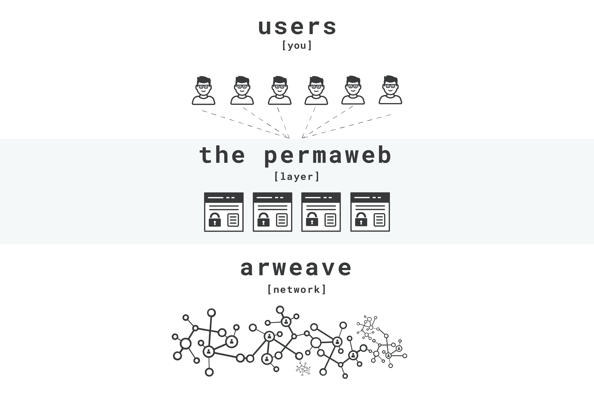
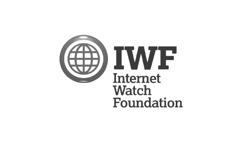

Arweave is a network that connects those with disk space to spare with those who need permanent data storage. This system offers unparalleled levels of data replication and security for users, as well as financial incentives for those storing data, without a middleman.
Rather than operating as a traditional company or foundation, the Arweave network is fully decentralised, meaning that anyone can store data in the network or offer storage space, without there being a leader or centralised point of failure. Through decentralization, Arweave offers a new standard of data archiving and storage: one in which information is globally replicated on hundreds of machines, impervious to fire, flood, or intentional damage.
Learn how the Arweave network works in detail in the project’s yellow paper.
For historical context, you can also read the June 2018 Arweave light paper, and the original August 2017 whitepaper. The founding team’s Arweave blog also contains documents and articles about the evolution of the protocol during its early stages, plus current updates on the project’s progress.
Below you will find a simple overview of the core technologies in the Arweave protocol.
The core technology that powers the Arweave is the blockweave. Just as a blockchain is a linked collection of blocks containing transactions, a blockweave -- specifically designed for the Arweave protocol -- is a set of blocks that contain data, linking to multiple previous blocks from the network. This data structure allows the network to an enforce that miners provide a ‘Proof of Access’ (PoA) to old data in order to add new blocks.
Unlike in a traditional blockchain, where miners are forced to expend electricity in order to earn tokens, in the Arweave network miners are also encouraged to replicate valuable data (the information stored in the network) in order to gain tokens. This mechanism offsets the value that is normally wasted in blockchain networks, with useful, energy efficient storage of data.
You can read more about Arweave’s blockweave and proof of access mechanisms in chapter 2.1 of the Arweave yellow paper.
Arweave’s data storage is backed by sustainable, transparent economics that allow users to perpetuate the replication of information forever.
The Arweave’s economic mechanism is similar to a traditional economic endowment structure. When a piece of data is added to the Arweave network, the user pays a ‘principle’ upfront, on which ‘interest’ in the form of storage purchasing power is accrued. Over time, interest on this one-time upfront payment is given to those that offer hard drive space so that they can profit from their storage contributions. By using extremely conservative estimates for storage pricing, Arweave ensures the long-term viability of the network’s endowment.
For more details regarding the network’s economics, expectations and mathematics, please see chapter 3.2.2 of the yellow paper.
On top of the core Arweave data storage layer, sits the permaweb. The permaweb is a collection of interlinked documents and applications -- just like the traditional web -- except all contents are entirely permanent. Because the Arweave network itself is built on top of HTTP (the protocol from which the traditional web arises), browsers have access to all of the data stored in the network. As the Arweave network itself is agnostic to its contents, the permaweb can be used to all kinds of information -- from wikis, to PDFs, to videos, and web applications. Once included in the network, these files are always accessible, from any place in the world, at any time. Further, once submitted nobody (including their original uploader) can alter them in anyway -- enforcing consumer integrity for applications, and verifiability for documents, forever. To find out how it feels to use the permaweb by browsing some applications built by the community here.
Just like the traditional web, potential abuse of the permaweb is a serious issue. The community of developers and storers that maintain the network treat these issues carefully. Unlike the traditional web, the permaweb has tools for democratic moderation of its content built into the core of the protocol – putting control of the new web back into the hands of the people, users.
When someone submits a transaction to the Arweave network, data storers are given the choice of whether to replicate the associated data. The maintainers of the network are able to filter and screen the transaction in whichever manner they choose, checking against known illicit material, scanning the data with computer vision software, et cetera. You can learn more about how content is moderated in the Arweave protocol in the yellowpaper. The founding Arweave team is working with the Internet Watch Foundation to provide the maintainers of the Arweave network with the capabilities that they need to keep their systems and the permaweb safe from abusive material. Data storers can also elect not to replicate any material from the network, for any reason, if they feel that it is inappropriate for storage. Finally, those that maintain gateways (the servers you will likely use to view the permaweb) can also apply content moderation policies to further safeguard their users. If you would like a piece of content found on an arweave.net gateway to be removed, please contact us and you will receive a response shortly.
